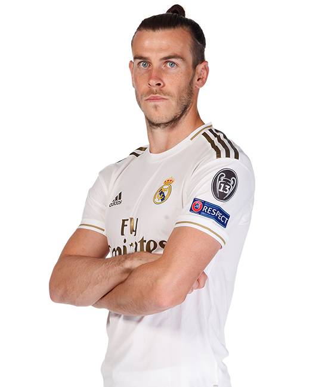
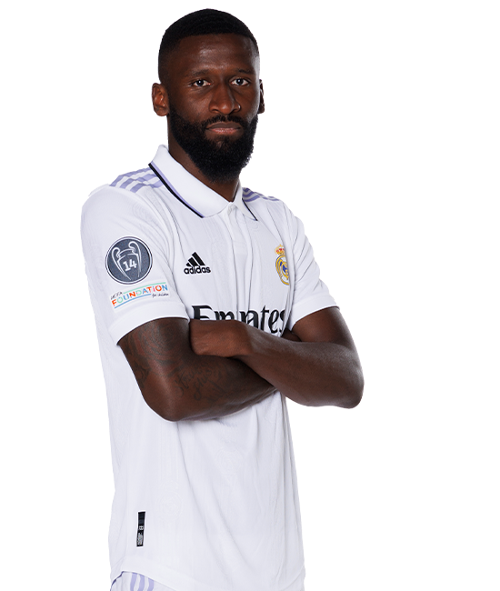

| Real de Madrid | |
|  | Gareth Bale | Né le 16 juillet 1989 à Cardiff est un footballeur international gallois évoluant au poste d'ailier droit au Los Angeles FC en MLS. |
|  | Antonio Rüdiger | Né le 3 mars 1993 à Berlin en Allemagne, est un footballeur international allemand évoluant au poste de défenseur central au Real Madrid. |
| |
Karim Benzema | Surnommé KB9 ou El Nueve en Espagne, né le 19 décembre 1987 à Lyon, est un footballeur international français évoluant au poste d'avant-centre au Real Madrid. |